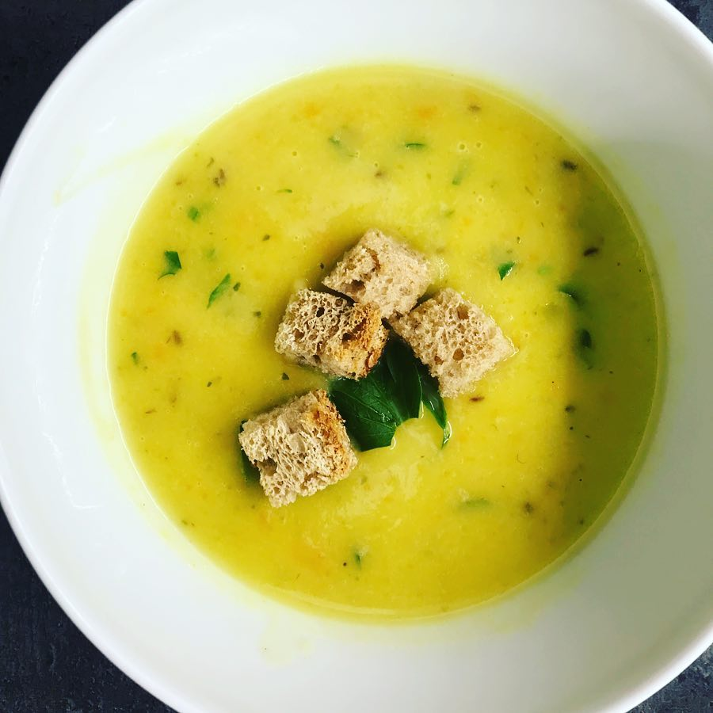

Zimná polievka podľa @cojediazdravedeti — Normy Jedál
#zimnapolievka #kremovalhodna #zemiakovyzaklad #petrzlenovavnat #zdravedieta #cojediazdravedeti #davidkovokoreni
Zemiaky orestujeme na olivaci, rasci a #nesoldik, kurkuma, pridame por, trosku mrkvy, kalerabu a povarime do makka a mixneme. Jemne nasekame vnat a posypeme. Mozeme podavat s krutonami👨🍳😋